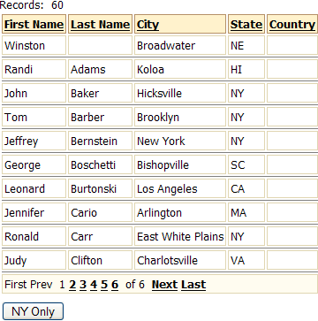
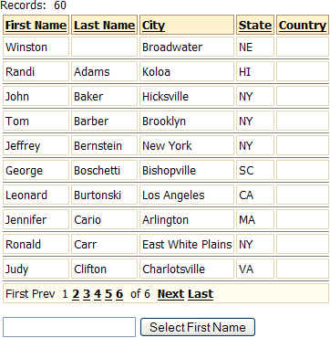
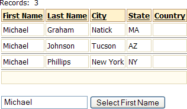

Filtering a Grid with a Button
The following example shows how to filter a grid on a page with button click. The button has a pre-defined filter value associated with it. The page before using the filter button looks like this. The example is based on the customer table of the AlphaSports database.
Method One: Using JavaScript to Set the Filter Variable
The virtue of this method is that it separates the value of the button (its label) from the value submitted to the filter expression. It requires some JavaScript coding but less Xbasic coding. as the picture suggests, when the user clicks the NY Only button, the grid will show only those records where the State column ( bill_state_region field) value is "NY".

Create a grid and place it on an A5W page.
While in the HTML Editor, click
 to place a push button on the page. Label the button "NY Only".
to place a push button on the page. Label the button "NY Only".Switch to the Source tab and modify the button code as follows.
The <input type=hidden name=btnClicked> code creates a variable named btnClicked that holds the filter value.
The on
click="btnClick('NY')" phrase causes the button click to run the btnClick()JavaScript function, which assigns the value "NY" to btnClicked.The script attached to the action property of the <form> tag causes the page to reload after it is submitted.
<form name="form1" action=" <%a5 ? request.script_name %> "> <input type=button value="NY Only" on <input type=hidden name=btnClicked> </form> |
At the top of the page after the <head> tag add the following code. This function receives the value "NY" and sets btnClicked equal to this value.
<script> function btnClick(btnVal) { form1.btnClicked.value = btnVal; form1.submit(); } </script> |
Near the top of the page you will see the following code. In this case the alias of the component is "Customers". Your grid component's alias may be different.
with tmpl_Customers componentName = "Customers" end with |
Change this code so it reads as follows. This code does the following:
It checks whether the btnClicked variable exists using the EVAL_VALID() function.
If the variable exists, it resets the tmpl.dbf.filter property of the grid to require that the bill_state_region field equal the value of btnClicked.
with tmpl_Customers componentName = "Customers" if eval_valid("btnClicked") then
.dbf.filter = "bill_state_region =" + quote(btnClicked) end if end with |
The result of clicking the button should look like the following.

Method Two: Using the Button Label to Set the Filter Variable
This method requires simpler button coding, but may require more Xbasic coding. as the picture suggests, when the user clicks the NY Only button, the grid will show only those records where the State column ( bill_state_region field) value is "NY".
Create a grid and place it on an A5W page.
While in the HTML Editor, click
 to place a submit button on the page. Label the button "NY Only".
to place a submit button on the page. Label the button "NY Only".Switch to the Source tab and modify the button code as follows.
The <input type=submit value="NY Only" name=btnClicked> code creates a variable named btnClicked that holds the filter value. Simultaneously, it sets btnClicked to "NY Only".
The script attached to the action property of the <form> tag causes the page to reload after it is submitted.
<form name="form1" action=" <%a5 ? request.script_name %> "> <input type=submit value="NY Only" name=btnClicked> </form> |
Near the top of the page you will see the following code. In this case the alias of the component is "Customers". Your grid component's alias may be different.
with tmpl_Customers componentName = "Customers" end with |
Change this code so it reads as follows. This code does the following:
It checks whether the btnClicked variable exists using the EVAL_VALID() function.
If the variable exists, it trims off the first word of the button label and places it into the variable var. Of course, this step would not be necessary if the button label was simply "NY" instead of "NY Only".
It resets the tmpl.dbf.filter property of the grid to require that the bill_state_region field equal the value of var.
with tmpl_Customers componentName = "Customers" if eval_valid("btnClicked") then var = word(btnClicked,1," ")
.dbf.filter = "bill_state_region =" + quote(var) end if end with |
The result of clicking the button should look like the following.
Method Three: Using Text Input to Set the Filter Variable
Method three allows the user, instead of the developer, to set the filter value. as the picture suggests, when the user enters a value and clicks Select First Name, the grid will show only those records where the First Name column ( firstname field) value matches the user's input.

Create a grid and place it on an A5W page.
While in the HTML Editor, click
to place a submit button on the page. Label the button "Select First Name".Switch to the Source tab and modify the button code as follows.
The first <input> tag assigns the user's input to the Xbasic variable var1.
The second <input> submits the page to the server.
The script attached to the action property of the <form> tag causes the page to reload after it is submitted.
<form method="post" action=" <%a5 ?request.script_name%> " > <input name="var1" value=" <%a5 ? var1 %> "> <input id=submit1 type=submit value="Select First Name" name="submit1"> </form> |
Near the top of the page you will see the first <%a5 tag. Change it so it appears as follows. This defines the var1 variable.
<%a5 dim var1 as c = default "" |
Below this section you will see the following code. In this case the alias of the component is "Customers". Your grid component's alias may be different.
with tmpl_Customers componentName = "Customers" end with |
Change this code so it reads as follows. This code does the following:
It checks whether the var1 variable is NULL. If not, it allows the filter to be applied.
If the variable exists, it resets the tmpl.dbf.filter property of the grid to require that the firstname field equal the value of var1.
with tmpl_Customers componentName = "Customers" if alltrim(var1) <> "" then .dbf.filter = "firstname = " + quote( alltrim(var1) ) end if end with |
The result of entering "michael" into the tex tbox and clicking the button should look like the following.

See Also